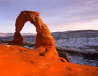

About Me
My name is Preston Akagi. I am from Utah, USA. My hobbies are playing basketball and Ultimate Frisbee. I have interest in a career in bioinformatics. I enjoy programming to make repeated actions easier.
Utah
Utah is in the western United States of America. It has a desert climate with snow in the winter, mountains, and a great salty lake in the north. Utah is a popular destination for skiing and hiking. Arches National Park is a classic tourist and hiking park.